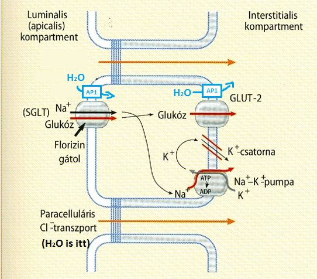

1-es témakör
1. A szervezet vízterei és azok meghatározása. Az extracelluláris és az intravaszkuláris folyadék.
Bevezetés
-
A homeosztázis a belső környezet dinamikus állandóságát jelenti ➜ az élő szervezetek egyik legfontosabb jellemzője ➜ az élettan legfontosabb alapfogalma.
Ebbe tartozik pl. az extracelluláris folyadék pH-jának állandósága.
A szervezet vízterei és azok meghatározása.
- interstitialis folyadék ➜ olyan extracelluláris folyadék, mely extravaszkuláris (tehát ereken kívüli)
- vérplazma ➜ olyan extracelluláris folyadék, mely intravaszkuláris (tehát ereken belüli)
| össz-víztér = 0,6 * testtömeg (pl. 42kg) | ||
| extracelluláris folyadék = 0,2 * testtömeg (14kg) | intracelluláris folyadék = 0,4 * testtömeg (28kg) | |
| interstitialis folyadék = 3/4 * ECF (10,5kg) | vérplazma = 1/4 * ECF (3,5kg) | |
A szervezet vízterei és azok meghatározása.
- higítási elv alapján történik
- ennek lényege: ismert mennyiségű indikátort bejuttatása ➜ megvárjuk míg egyenletesen eloszlik ➜ utána a koncentrációját meghatározva már kiszámítható !!
- megoszlási hányados = (indikátor mennyisége) / (indikátor koncentrációja)
- az indikátor vénán kerül bejuttatásra
- feltétele ➜ indikátor át kell jutnia sejtmembrán + kapillárisfal is
- ilyen pl. deutériummal jelzett víz, tritiummal jelzett víz
- feltétele ➜ indikátor NEM juthat át a kapilláris falán
- mivel a kapilláris falán a fehérjék (pl. plazmafehérjék) nem mennek át, így célszerű olyat választani, ami fehérjéhez kapcsolódik
- pl. radioaktív (pl.jód-)izotóppal jelzett albumin
- pl. evans-kék nevű festék ➜ fehérjékhez kötődik, így ez se megy ki érpályából
- feltétele ➜ indikátor át kell jusson a kapilláris falán, DE! a sejtmembránon NEM juthat át
- mivel a 'kisebb' szénhidrátok könnyen átjutnak kapillárisfalon, án sejtmembrán számukra átjárhatatlan ezért ilyen indikátor pl. inulin nevű oligoszacharid '
- intracelluláris folyadék = össz-víztér - extracelluláris folyadék
- extracelluláris folyadék = extracelluláris folyadék - vérplazma
mennyiségek meghatározásának elve?
össz-víztér mennyiségének meghatározása?
vérplazma mennyiségének meghatározása?
extracelluláris folyadék mennyiségének meghatározása?
intracelluláris folyadék mennyiségének meghatározása?
közvetlen meghatározása nem lehetséges, hiszen olyan indikátort, ami sejtmembránon csak befele tud menni...
interstitiális folyadék mennyiségének meghatározása?
tehát intracelluláris & interstitialis mennyiséget közvetett úton határozzuk meg
Az extracelluláris és az intravaszkuláris folyadék
- vérplazma / ECF / ICF ionkoncentráció közti összefüggés? ► vérplazma megegyezik lényegében az ECF-el mert a kapilláris-fal átjárható az ionok számára (de a sejtmembrán számára nem!)
- extracelluláris tér esetében is megegyező? ► ez már nem
- vérplazma ➜ 60-80g/l
- intracelluláris tér ➜ sokkal több
- elektroforézis alapján különválaszthatók csoportokba
- albumin az egy konkrét fehérje, ezzel szemben a különböző globulin csoportok, több fehérjét foglalnak magukba (pl. az α1-globulinok nem egy fehérje)
- onkotikus nyomás = kolloid ozmotikus nyomás
- 'definíció' ➜ nagy molekulasúlyú anyagok [fehérjék] ozmotikus nyomása
- az összes fehérje részt vesz benne, de leginkább az albumin 'biztosítja' ➜ ugyanis
- ugyan kicsi a molekulatömege
- de még így is ez teszi ki durván a plazmafehérjék felét g/l-ben ➜ részecskeszámban még nagyobb arányban ez teszi ki
- vérzéscsillapítás (pl. fibrinogén')
- ellenanyagok = immunglobulinok ➜ ezek a globulinok
- pufferek
- alapvetően acidikusak ➜ protont kötnek meg (később meg elengedhetik)
- különböző transzport-folyamatokban vesznek részt
- tápanyagok (lipoproteinek)
- oxigén & szén-dioxid
- ionok (vas,réz)
ionkoncentrációk
| ECF | ICF | ||
|---|---|---|---|
| konc | mmol/l | ||
| Na+ | 142 | 12 | |
| K+ | 4 | 150 | |
| Ca2+ | 1,25 (2,5) | 0,0001 (2,5) | |
| Mg2+ | 1 | (30) | |
| H+ | pH=7,4 | pH=7,1 | |
| Cl- | 105 | 5 | |
| HCO3- | 25 | 10-15 | |
| HPO42- + H2PO4- | 1 | +++ | |
vérplazma ➜ glükóz & karbamid koncentráció?
| glükóz | 5mmol/l |
| urea = karbamid | 5,5mmol/l |
fehérjék
koncentráció ➜ vérplazma & intracelluláris tér?
plazmafehérjék ➜ felsorolás? funkciójuk?

felsorolni tudjam őket, + lennt leírt funkciók (amiről volt előadáson szó, azt leírtam!')
funkcióik
ennek a kapilláris-falon keresztül történő transzportban van fontos szerepe (lásd később)
ebbe is, - az onkotikus nyomáshoz hasonlóan - az összes fehérje részt vesz
hematokrit mi?
- hematokrit = (vér alakos elemei térfogata) / (vér össztérfogat) = 44%
➜ tehát az intravascularis folyadék 44%-a intercelluláris, és 56% extracelluláris(=vérplazma)
vvt átmérő?
- 8µm '
pH mi?
- -log[H+] ➜ pl. ha 10-7,2mol/l, akkor a pH 7,2
2. A sejtmembrán szerkezete, permeabilitása, transzport funkciói.
ozmózis
- ozmolalitás ➜ 1kg oldószerben feloldott részecskeszám mólban
- ozmolaritás ➜ 1l oldószerben feloldott részecskeszám mólban
- a kettő megegyezik, amennyiben a részecske nem disszociál (n=1) ➜ pl. ha glükóz 0,1M akkor 0,1Osm/l
- azonban ha disszociál (n>1), akkor eltér ➜ pl. ha NaCl 0,1M akkor 0,2Osm/l
- 290mOsm/kg
- ugyanennyi (hisz ellenkező esetben a víz átáramolna és kiegyenlítené)
- van egy szemipermeábilis membrán (víz számára átjárható, oldott anyag számára nem), két oldalán eltérő ozmolaritású oldott anyag
- az alacsonyabb ozmolaritású oldal felől megindul a víz a magasabb irányába
- addig tart amíg a kialakult hidrosztatikai nyomás' meg nem egyezik az ozmózisnyomással
- π = T * R * n * c (➜van't Hoff törvény)
(anno levezetése kémián csak zárójelbe, nem kell tudni, de talán segít megjegyezni)
- 0,9v% (0,009g/ml)
- ha két oldat ozmolalitása megegyezik, akkor izozmotikusak
- de úgy is felírható, hogy ha két oldat fagyáspontcsökkenése megegyezik, akkor izozmotikusak ➜ ugyanis... Annak a vizes oldatnak a fagyáspontja, amelynek ozmotikus koncentrációja 1 Osm/kg, H2O = –1,86°C. Az oldat ozmolalitását többnyire az oldat fagyáspontcsökkenése alapján mérjük. Az azonos fagyáspontcsökkenésű oldatok izozmotikus oldatok.
- hipozmotikus az az oldat, mely ozmolalitása a másik oldatéhoz képest kisebb
- hiperozmotikus az az oldat, mely ozmolalitása a másik oldatéhoz képest nagyobb
- izotóniás oldat, melybe a sejtet belehelyezve a sejt térfogata nem változik '
- hipotóniás az az oldat, melybe a sejtet belehelyezve a sejt térfogata nő
- hipertóniás az az oldat, melybe a sejtet belehelyezve a sejt térfogata csökken
- nem feltétlen, ugyanis a részecskék sejtmembránon való átjutása is számít izotóniás esetében
- jele σ
- σ értéke 1 és 0 között változhat
- 1 ➜ membrán az oldott anyagot egyáltalán nem engedi át
- 0 ➜ membrán az oldott anyagot teljesen átengedi
- így az ozmózisnyomás képlete (ami már beleveszi membránon való átjárhatóságot is)
- π = σ * π'régi'
- effektív az anyag, mely NEM jut át membránon ➜ σ=1
- ineffektív az anyag, mely átjut a membránon ➜ σ<1
- effektív
- ozmózisnyomás
- NEM a teljes ozmózisnyomás, hanem annak csupán egy részét kitevő onkotikus nyomás
- kapilláris-fal átjárható kis molekulaméretű(súlyú) anyagokra ➜ ionok, glükóz, diszacharidok
- kapilláris-fal átjárhatatlan nagy molekulaméretű(súlyú) anyagokra ➜ fehérjék
- tehát egyedül a fehérjék effektívek ➜ ezért fontos az onkotikus_nyomás fogalma
- ugyanis itt a hajtóerő NEM a teljes ozmózisnyomás, hanem annak csupán egy részét kitevő onkotikus nyomás
ozmolalitás & ozmolaritás mi?
melyik pontosabb és miért?
ozmolalitás, ugyanis az ozmolaritás változhat hőmérséklet hatására (mert nő/csökken az oldószer térfogata)
JR ozmolaritás és molaritás közti összefüggés?
ozmolaritás = molaritás * értékűség(n)
vérplazma ozmolalitása kb mennyi?
hiszen NaCl 0,9v% (0,009g/ml) ➜ átszámolva kijön, hogy c ~= 155mM ➜ 0,31 Osm/l a fiziológiás (n=2) '
sejtek ozmolalitása kb mennyi?
JR ozmózis jelensége, ozmózisnyomás
ozmózisnyomás ➜ oldatra kifejtett nyomás, mely felfüggeszti az ozmózist azáltal, hogy dinamikus_egyensúly áll be

ozmózisnyomás képlete?

izozmotikus NaCl = fiziológiás sóoldat koncentrációja?
izozmotikus oldat?
hipozmotikus & hiperozmotikus oldat?
izotóniás?
hipotóniás & hipertóniás oldat?
izozmotikus egyben izotóniás?
pl.1 izozmotikus (290mOsm/kg) szacharóz oldatba téve sejteket nem történik' változás, mert a sejtmembrán számára átjárhatatlan a szacharóz ➜ szacharóz-oldat egyben izotóniás is
pl.2 izozmotikus urea oldatba téve sejteket azonban, az urea-transzporterek bejuttatják az ureát ➜ csökken az extracelluláris folyadék ozmolalitása, amit egyből kompenzál azzal, hogy víz is elkezd beáramlani a sejtbe, így visszaáll ➜ hipotóniás oldat
rejekciós_hányados?
§ Ha a kompartmenteket elválasztó membrán nemcsak vízre permeábilis, de részlegesen átjárható valamelyik oldott anyagra is, ezt a rejekciós_hányados jellemzi
effektív vs ineffektív?
vérplazmában lévő részecskék többsége effektív vagy ineffektív?
víztranszportot a sejtmembránon keresztül mi határozza meg?
víztranszportot a kapillárisfalon keresztül mi határozza meg?
magyarázatot lásd kapilláris-fal átjárhatósága
kapilláris-fal ➜ átjárhatósága? következménye?
A sejtmembrán szerkezete, permeabilitása, transzport funkciói.
- két teret elválasztanak (extracelluláris vs intracelluláris)
- mellette közben szabályozott összeköttetést is létesítenek (anyag- & információkicserélődés)
- lipid kettősréteg ➜ poláros részük EC fele néz, apoláros részük a membrán belsejében van
- foszfolipidek (nagyrésze)
- koleszterin
- glikolipidek
- fehérjék (transzmembrán)

- integráns ➜ egyréteg asszociált, transzmembrán
- perifériás (lipidhez, fehérjéhez kötött)
- fehérjék a membránban oldalfele tudnak mozogni(laterális diffúzió), a membránra merőlegesen nem(flip-flop)
- annyi kiegészítő, hogy a lipid-raftok esetében a fehérjék csoportokban mozognak (nem egyesével külön-külön)
JR sejtmembrán funkciója
kettős funkciót látnak el...
felépítés?
mozaik-modell lényege?
lipid-raftoknak magas a koleszterin & szfingolipid tartalmuk

A sejtmembrán szerkezete, permeabilitása, transzport funkciói.
- transzport
- szabályozó molekulák forrásai (pl. prosztaglandinok ')
- felületet biztosítanak bizonyos reakciókhoz (pl. ilyen lesz majd véralvadásnál a vérlemezkék membránfelülete)
- egyszerű_diffúziót 'biztosítják'
- annál jobban engedik át az anyagot, minél kisebb és minél lipid-oldékonyabb
- gázokat (CO2,O2) nagyon jól átengedik (kicsik, apolárosak) ➜ gyorsan kicserélődnek
- kis molekulatömegű anyagokat is még átengedik (már kevésbé jól)
- apoláros ➜ pl. szteroidhormonok
- poláros ➜ pl. víz, glicerin
- ionok már alig jutnak át (ugyan kicsik, de töltésük van) ➜ fehérjék biztosítják majd
- nagyobb méretű poláros anyagok számára már teljesen átjárhatatlan ➜ fehérjék, diszacharidok és annál nagyobb széndhidrátok
- transzport
- receptorok
- enzimek (pl. foszfolipáz-C jelátvitelnél, adenilát-cikláz)
lipidek
funkcióinak felsorolása?
szerepük a transzportban részletesen?
pl. víz esetében már szükség van fehérje transzporterekre (szvsz akvaporinok) az átjutásához '
monoszacharidok számára is már fehérje-transzporterek biztosítják az átjutást igazából; diszacharikdokra pedig még az sincs!
membránfehérjék funkcióinak felsorolása?
A sejtmembrán szerkezete, permeabilitása, transzport funkciói.
- egyszerű_diffúzió ➜ nincs, ezt a 'lipidek biztosítják'
- csatornák ➜ vízcsatorna, ioncsatorna
- facilitált_diffúzió ➜ karrier=transzporter
- elsődleges_aktív_transzport ➜ pumpa
- másodlages_aktív_transzport ➜ transzporter
- egyszerű_diffúzió ➜ koncentráció-grádiens irányában (nagyobbtól-kisebb fele)
- passzív_transzport ➜ koncentráció/elektrokémiai-grádiens irányában (nagyobbtól-kisebb fele)
- aktív_transzport ➜ koncentráció/elektrokémiai-grádiens ellenében (kisebbtől-nagyobb fele)
- egyszerű_diffúzió ➜ koncentráció-grádiens (nagyobbtól kisebb fele)
- facilitált_diffúzió ➜ koncentráció-grádiens / elektrokémiai-grádiens
- aktív_transzport ➜ ATP
- adott anyagra nézve mennyi a membrán permeabilitása
- adott anyag koncentráció-különbsége a membrán két oldalán ➜ egyenesen arányos
- telítési_kinetika jellemzi ➜ azaz egy bizonyos átvivendő-anyag koncentráció-grádiens esetében már az összes karrier fehérje igénybe van véve, így hiába nő tovább a koncentráció-grádiens, a sebesség nem fog
- 'fehérjét igényel a facilitált
- egyszerű sebessége egyenesen arányos a transzportálódó anyag koncenátráció-grádiensével, míg facilitáltat a telítési_kinetika jellemzi
- facilitált diffúzió gátlószerekkel gátolható
- közel 100%os (nem abszolút, de elég szűk tartományú)
- ebből az következik, hogy kompetitív' gátlása lehetséges ➜ pl. a vvt-k a glükózt a GLUT-1 nevű karrierrel veszik fel
- ha van mellette mannóz is, akkor mindkettő csökkenti a másik transzportját, mivel vetélkednek a karrier szubsztrátkötő helyéért
- ha van mellette maltóz, akkor az ugyanúgy hozzákapcsolódik a karrierrhez, azonban maga a transzport nem megy végbe, tehát hozzákapcsolódva ott marad és gátolja a glükóz-transzportot
- uniport ➜ 1félét juttat át
- kotranszport ➜ többfélét juttat át
- szimport ➜ azonos irányba
- antiport ➜ ellentétes irányba
- uniporterek közül 2 félét tanulunk
- glükózt átjuttató (GLUT1-7)
- aminosavakat átjuttató
- szimporterek
- Na+ & glükóz (erről biztos tanulunk majd)
- (illetve továbbiak a képen)

- antiporterekre pl. Na+/H+
- elektroneutrális ➜ nincs nettó töltésáramlás a membránon keresztül ➜ pl. GLUT-1 glükóz transzportja, vagy az H+/Na+ antiport
- elektrogén ➜ van nettó töltésáramlás a membránon keresztül ➜ pl. Na+ + glükóz szimporter
- glükózt transzportálnak
- 7 típusuk van (GLUT 1-7)
- pl. GLUT-1 vvt membránján juttatják át a glükózt
- pl. GLUT-4 szabályozott inzulin által ➜ inzulin a sejtben jelátviteli folyamatot vált ki, aminek hatására a GLUT-4 tartalmú vezikulák kijutnak a sejtből a membránba, így a sejt képes lesz glükózt felvenni
- vvt-kben van főként (de máshol is lesz róla szó) ➜ ez teszi lehetővé ' a szén-dioxid elszállítását (lásd később)
- ATP megkötése okoz konformációváltozást
- az ATP hidrolízise fedezi az energiát a koncentráció/elektrokémiai-grádiens ellenében történő átjuttatást
- P típusú ➜ ATP-hasítás során foszforilálódik a fehérje
- Na+-K+ pumpa
- Ca2+ pumpa
- (K+/H+ pumpa)
- V típusú ➜ H+ pumpák
- (F típusú ➜ ATP-szintáz)
- ABC szupercsalád
- 3Na+-t sejtből kipumpálja / 2K+-t bepumpálja sejtbe
- közben 1ATP-t hasít
- ez biztosítja az ECF/ICF nagyban eltérő Na+ és K+ koncentrációját
- P-típusú pumpa
- működése gátolható Ouabain hozzáadásával
- egyik típusa a sejtmembránban van, és citoszolból kifele pumpálja a Ca2+-t
- másik típusa a sejten belül az ER membránban van, és citoszolból ER lumenébe pumpálja a Ca2+-t
- gyomorsósav szekrécióban játszik szerepet
- (fedősejtek membránjában van ➜ protont pumpál gyomor lumenébe, közbe K+ enged be)
- pl. lizoszómákban vannak, és a citoszolból a vakuolóm belsejébe pumpálja a H+ (lásd msb.1)
- ATP binding casette (ATP-kötő) rész van bennük (nevük eredete)
- legtöbb ABC-transzporter pumpa, de van amelyik csatorna (pl. CFTR)
- közülök a legismertebb a CFTR ➜ Cl- transzportot tesz lehetővé
- fontos szerepe van a folyadékok szekréciójában (pl. hasnyálmirigy nyák)
- cisztikus-fibrózis ➜ ha ez nem működik (genetikai mutáció), akkor nyák besűrűsödik (általában fiatalon halál)
- másik legismertebb MDR-transporterek
- alapvető funkciójuk ➜ védik a sejteket a toxikus anyagoktól (nagy apoláros molekulák), azáltal hogy kipumpálják magukból őket
- probléma ➜ ráksejtek ezek szintézisével rezisztenssé válnak a kemoterápiára
- bélhámsejt glükóz felvétele (lásd transzepiteliális transzport)
| transzport | ||||
|---|---|---|---|---|
| passzív | aktív | |||
| egyszerű_diffúzió | csatornák | facilitált_diffúzió | elsődleges | másodlagos |
transzport-fehérje? !!§ transzportban szereplő membránfehérjék még a gap_junctionok
| ||||
nagyobb / kisebb koncentrációjú térbe megy a szállítandó? | ||||
hajtóereje? | ||||
diffúzió sebessége ➜ egyszerű & facilitált?
-
egyszerű ➜ alábbiaktól függ:
tehát ha egyik oldalon 2M másikon 0M (Δ=2), az kétszer annyi, mintha egyik oldalon 4M, másikon 3M (Δ=1)
(ugyanis)

különbségek' a facilitált és egyszerű diffúzió között?(3)
facilitált_diffúzió specifitása és következménye?
pl. GLUT-1-nevű transzporter csak D-glükózt enged át, L-glükózt nem ➜ de emelett még kis mennyiségben a mannózt is átengedi
transzporterek csoportosítása 'molekulaszállítás-alapján'?

transzportok csoportosítása 'elektromos-szempont alapján'?
GLUT-transzporterek ➜ funkció? típusaik? 2pl?
Cl-/HCO3- karrier?
primer pumpák = ATPáz-ok
működésük lényege?
csoportosításuk?
'legjelentősebb' pumpa?
 Na+-K+
Na+-K+
Ca2+ pumpa típusai?
➜ citoszolban rendkívül alacsony a [Ca2+] (0,0001 mmol/l)
K+/H+ pumpa jelentősége?
V típusú pumpák működésének lényege?
ABC szupercsalád? '
másodlagosan aktív transzport ➜ bemutatása 1pl-n
transzepiteliális transzport
- Az emberi szervezetet mintegy 200 különböző típusú sejt építi fel. Ezek közül egyes típusokban a plazmamembrán az egész sejtben homogén felépítésű és funkciójú; ezek a nem orientált vagy nem polarizált (szimmetrikus) sejtek. Ehhez a sejttípushoz tartoznak pl. a vérsejtek. Más sejttípusok azonban aszimmetrikusak: az orientált vagy polarizált sejtekben a plazmamembrán a sejt két szemben lévő pólusán különbözik, sőt a sejtorganellumok elhelyezkedése is aszimmetrikus. A polarizált sejtekhez tartoznak az alábbiakban ismertetett hámsejtek (epithelsejtek), az endothelium sejtjei, az ependymasejtek és a neuronok. (A neuronok szerkezetét és működéseit a 6. fejezetben írjuk le.)
- epiteliális sejtek (pl. bél lument határolják, vesetubulusokat) esetében asszimmetrikus
- egyik oldalról a külvilág, másik oldalról interstitialis_tér határolja
- tight-junction 'körbefutja a sejtet'
 hermetikusan kettéválasztja
hermetikusan kettéválasztja - felette lévő rész apikális-membrán, alatta lévő rész bazolaterális-membrán ➜ ezek fehérje-összetétele különbözik ➜ pl. bélhámsejteknél Na-K pumpa bazolaterális membránban, SGLT pedig az apikális-membrán van
- ezenkívül biztosítja, hogy eltérű pontenciál van lumen-ben(-20mV) mint EC-ben(0mV)

- tight-junctiont alkotó klaudinok ' alkotják ➜ ezek típusa határozza meg, hogy mennyire átjárható a tight_junction (van amikor víz se jut át pl. vese; de van ahol jobban átjárható)
- bélhámsejt glükóz felvétele
- vese gyűjtőcsatorna
- a sejt bazális oldalában Na-K pumpa van
- 2K+ bepumpál a sejtbe, amit azonban a bazális oldalon lévő K+-csatorna vissza is juttat ➜ K+ csak körforgást végez, nem változik a koncentrációja
- 3Na+ kipumpál interstitiumba ➜ [Na+] csökken a sejtben és nő az interstitiumban
- utóbbit használja fel SGLT nevű szimporter, mely az apikális membránban van ➜ Na+ és glükózt juttat együtt a sejtbe az EC-ből
- ugyanis a glükóz koncentrációja alapvetően nagyobb a sejtben, mint EC...
- ...azonban [Na+] kisebb a setjben, mint EC ➜ így az Na+ beáramlása fedezi az energiáját a glükóz 'koncentrációval-szembeni' transzportjához
- így közvetve lényegében a Na-K pumpa ATP-je fedezte az energiáját az SGLT-nek
- az Na+ sorsa tehát ➜ lumenben csökken a koncentráció, interstitiumban nő
- a glükózt pedig mivel IC-ben magasabb, mint az interstitiális térben ➜ GLUT-2 karrier átjuttatja (facilitált diffúzió) ➜ nettó sorsa ennek is megegyezik Na+-éval
- tehát az eddigiek alapján a következő történik ➜ glükóz + Na+ áramlik lumenből interstitiumba
- ennek a következménye az lenne, hogy a lumen potenciálja csökken, interstituméhoz képest
- így egy minimális mennyiség után nem lenne képes tovább áramlani (elektromos-grádiens már gátolná!)
- így jelen esetben a lumen és interstitium közti potenciál következtében a Cl- fog beáramlani a tight junctionon keresztül ➜ ez ún. paracelluláris Cl--transzport
- 'ezenkívül a sejtbe jutott K+-t visszajuttatja interstitiumba a K+-csatorna
- így az eredő transzport ➜ NaCl + glükóz lumenből interstitiumba be, és az e következtében létrejövő ozmotikus-koncentráció_különbség következtében a víz is ugyanúgy beáramlik lumenből isterstitiumba (tight junctionon keresztül)
- ugyanaz történik, mint bélhámsejt glükóz felvételénél
- a különbség, hogy apikális oldalon Na+-csatorna van, nem Na+-glükóz-szimporter ➜ tehát a glükóz felvétel kimarad
- az eredő áramlás így itt annyi ➜ lumenbről (NaCl + víz) interstitiumba
epithelialis-sejtek felépítése
3 példa, mely bemutatásra kerül majd?
bélhámsejt glükóz felvétele?
-

'szénhidrátok lebontása glükózzá' lumenben történik ➜ ezután a feladat, hogy a glükózt a bélhámsejt felvegye, és átjuttasa az interstitalis térbe, és ott bejusson a kapillárisokba
§ 'másodlagos aktív transzporterek az alacsony [Na+]-t használják fel, melyet az Na-K pumpa biztosít ➜ lásd kép: itt szimport/antiportnál látható, hogy szinte mindig ott van az Na+, amit arra használnak fel, hogy fedezzék az energiát
lásd kép: itt szimport/antiportnál látható, hogy szinte mindig ott van az Na+, amit arra használnak fel, hogy fedezzék az energiát§ 'így ennél és az összes ion-transzportnál elmondható, hogy ion csak úgy tud érdemleges mennyiségben átáramlani, ha ellenkező töltésű ion is áramlik vele (elektroneutralitás) ➜ hiszen ellenkező esetben, minimális átáramlás után már az elektromos-grádiens gátolná a továbbit'
§ vese proximális tubulus részében -amennyiben nem diabeteses az illető- ugyanezzel a mechanizmussal szívódik vissza a glükóz (lásd később)
vese gyűjtőcsatorna?
transzcelluláris Cl--transzport?
A) másodlagosan aktív klorid-szekréció ➜ jellemzi a nyálmirigyek nyálelválasztását, pancreas nyálelválasztását '
B) másodlagosan aktív klorid-felszívás ➜ jellemzi a vese Henle-kacs része
| különbségek | A | B |
|---|---|---|
| Na+-K+-2Cl- kotranszporter | bazális membránban van | apikális membránban van |
| 'egyből körforgással ioncsatornán vissza' | K+ és Na+ ➜ vissza interstitiumba | K+ ➜ itt luminális oldalon is van |
| Na+ sorsa | paracellulárisan át | transzcellulárisan át |
| Na+ sorsa | paracellulárisan át | transzcellulárisan át |
| CFTR = Cl--csatorna | apikális membránban van | bazális membránban van |
| víz | ugyanúgy paracellulárisan átáramlik a NaCl mellett, mint bélhámsejtnél (ozmózis) ➜ két esetben ellenkező irányba | nincs, mert olyan szoros a hám, hogy tight_junction nem engedi át ➜ hiperozmotikus lesz a belső tér, és hipozmotikus a külső tér |
A) paracelluláris Na+ áramlást a lumenben felgyülemlő Cl- következtében kialakult lumen-interstitium közti potenciál-grádiens váltja ki (lásd hasonlóan bélhámsejtnél)
endocitózis & exocitózis
- nem a membránon lépnek át, hanem vezikulákba lépnek be, és azon keresztül jutnak be/ki
3. Ioncsatornák osztályozása, működésük fő jellemzői. Feszültségfüggő Ca2+ csatornák.
Ioncsatornák osztályozása, működésük fő jellemzői. Feszültségfüggő Ca2+ csatornák.
- csatornafehérjék főbb típusai ➜ ioncsatornák, akvaporinok(=vízcsatornák)
- több típusa van
- pl. akvaporin-2 a vesében jelentős (lásd később)
- legtöbb nem szabályozható ➜ tehát szimplán permeábilissá teszik vízre a membránt
- feszültség-függők (A) ➜ feszültség-változásra(depolarizáció) nyílnak, ilyenek pl. Na+- és K+- és Ca2+-csatornák
- ligand-függők (B,C) ➜ ligand, pl. neurotranszmitter (pl. acetilkolin, glicin, γ-aminovajsav, IP3) hatására nyílnak
- mechanoszenzitív ' (D) ➜ mechanikai hatásra (membránfeszülésre) nyílnak ki
akvaporinokról tudnivalók?
ioncsatornák osztályozása?

zárt állapotban vannak alapvetően ➜ szignál hatására nyílnak, a szignál típusa alapján lehetnek
Ioncsatornák osztályozása, működésük fő jellemzői. Feszültségfüggő Ca2+ csatornák.
-
csatornafehérjék működésének lényege
- csatornafehérjéknek van egy pórus doménje ➜ ezen hatol át az ion
- a pórus egyik fele 'szűk'
- ez biztosítja a specifikusságát (pl. képen láthatónál e következtében jut át csak K+, Na+ pedig alig)
- ezen keresztül szabályozható (nyitható/zárható)
fehérjék α-hélix része van a membránban ➜ ebből jelen esetben min.2 úgy van bennt a membránban, hogy pólus-domént alkotnak
4. A sejtek nyugalmi membránpotenciáljának létrejötte.
szervezetben mit tekintünk nulla potenciálnak
- EC ➜ tehát ehhez képes pl. bélhámsejt IC-ben van -80mV
5. Az akcióspotenciál létrejötte az ingerlékeny sejtekben: azonosságok és különbségek a különböző sejtekben. Az ingerület vezetése.
sk
- E
6. Sejtek közötti hírközlés. Másodlagos hírvivő mechanizmusok.
Sejtek közötti hírközlés. Másodlagos hírvivő mechanizmusok.
- autokrin ➜ jelet kibocsátó sejt egyben a fogadó is
- juxtakrin = contact-dependent ➜ jelet kibocsátó sejt érintkezik a fogadó sejttel (ugyanis a jel és receptor is transzmembrán fehérje)
- parakrin ➜ jelet kibocsátó és fogadó egymáshoz oly közel vannak, hogy a jel diffúzióval jut el
- szinaptikus ➜ tulajdonképpen a parakrin egy speciális formája, mikor az idegsejt axonján(lehet akár 1m hosszú is) végig fut az akciós potenciálhullám, és a végkészülékén lévő neurotranszmitterek leadása megy végbe
- endokrin ➜ jelet kibocsátó és fogadó egymástól távol van, és a jel a véráramon keresztül jut el a fogadó sejthez ➜ jel hormon
- kettős funkciójúak
- felismer a ligandot, amire specifikus
- következtében biológiai hatást hoznak létre (életfolyamatot szabályoznak általa) ➜ ami által a szabályozásban kulcsszerepet játszanak
- utóbbi a különbség az enzimekkel szemben (ugyanis enzimek is specifikusan megkötnek anyagot, de nem hoznak létre biológiai hatást)
- a ligandra nagy az affinitásuk ➜ kis koncentráció(10-9M) is elég
- a ligandra nagy a specifitásuk (nem 100%, meglehet téveszteni őket, erre épül a farmakológia ipar :))
- telítési kinetikát mutatnak (telíthetőek liganddal csakúgy, mint a transzporterek)
- ligand kötésük reverzibilis
- biológiai választ hoznak létre
- agonista ➜ receptorthoz kötődve, biológiai választ hoznak létre (receptort aktiválják)
- részleges agonisták ➜ receptorthoz kötődve, csak részleges biológiai választ hoznak létre
- antagonista ➜ receptorthoz kötődve, NEM hoznak létre biológiai választ (receptort gátolják)
- aspecifikus ➜ ligand, mely NEM a receptorhoz kötődik
- specifikus ➜ ligand, mely a receptorhoz kötődik
- összes = specifikus + aspecifikus
- disszociásciós konstans ➜ az a ligandkoncentráció, ahol félmaximális a Receptor-Ligand kötés
- képlete ➜ kép
- tehát amikor a receptorok fele ligandot köt, akkor [R] = [LR] ➜ tehát Kd = [L]
- ez azért fontos, mert általánosan elmondható, hogy Kd értéke körül 'működik jól' a receptor (ami egyébként ált. 10-9M tájékán van)
- 2 dologgal történik ➜ hatáserősség(potency), hatékonyság(efficacy)
- ez azt mutatja, hogy az adott agonista az általa létrehozható maximális válasz mekkora százalékát hozza létre
- képen két különböző ligand(agonista) koncentráció van feltüntetve azonos receptor esetében
- x tengely a agonista koncentrációt jelzi, y pedig a biológiai hatáserősséget
- mindkét agonista esetében a 100% hatáserősség megegyezik, de ezt különböző agonista koncentráción érik el
- EC50 ➜ az az agonistakoncentráció, ahol a hatáserősség 50%
- amelyik agonistának kisebb EC50, annak nagyobb a hatáserőssége
- ez azt mutatja, hogy az adott agonista mekkora maximális választ hoz létre
- képen a nagyobb biológiai hatást hoz létre maximális hatáserősségnél, mint b
- tehát a potency amikor 100%, akkor érte el a efficacy is a sajátjánál a maximumot '
- antagonistával gátolva az angiotenzin-receptort a vérnyomás csökkenthető
- agonistával' 'pótolható' a vazopresszin, ami a V-2-receptor működését helyreállítja, ezáltal a vízvisszaszívást
szabályozás mechanizmusainak felsorolása?
gap_junction ➜ rajtuk keresztül potenciáláramlás történik a sejtek között (pl. szívben) (sorolható juxtakrinbe)
§ jel = ligandum ➜ receptorhoz fog kötődni a fogadó sejtben (kivéve gap_junctionnél)
receptorok funkciója?
receptorok tulajdonságai?(5)
ligandok csoportosítása?
Receptor kötési tulajdonságainak vizsgálata jelzett ligand segítségével
Kd?


receptor biológiai hatásának jellemzése?

potency
efficacy
agonista/antagonisták mi használja fel? 1-1 konkrét pl?
farmakológia széles körben (ezekre épül)